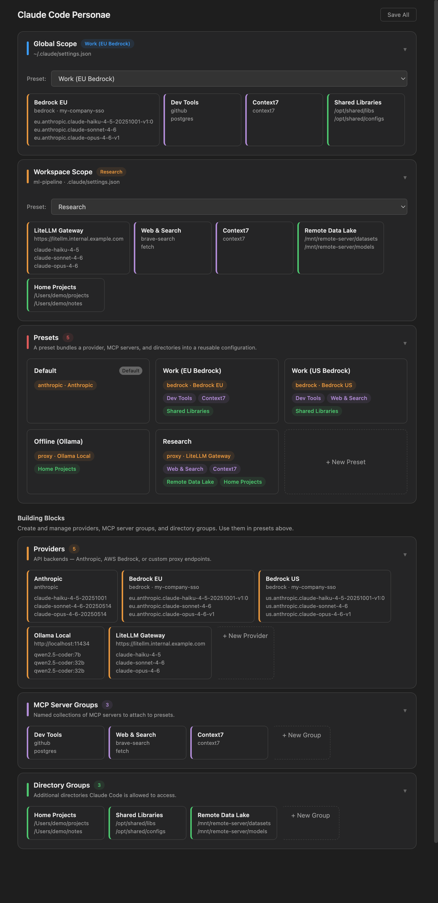

Claude Code Personae
A VS Code extension for managing Claude Code configurations through composable, reusable presets. Switch between Anthropic Direct, AWS Bedrock, and local models without touching a single JSON file.

What Claude Code Personae does
Composable presets
Build configurations from three building blocks — Providers, MCP Server Groups, and Directory Groups — then combine them into named presets you can switch in seconds. No more hunting through JSON to change a model or endpoint.
Any backend, one interface
Use Anthropic Direct for everyday work, AWS Bedrock for enterprise compliance or cost control, or a local model via Ollama, vLLM, or LM Studio — all managed from the same VS Code panel with live model discovery.
Global and workspace scopes
Apply presets globally or per workspace. Workspace scope can inherit from global, so project-specific overrides are easy and the extension keeps Claude Code's own config files in sync automatically on save.
How it works
Building blocks
- Providers — Anthropic Direct, AWS Bedrock, or any OpenAI-compatible proxy (Ollama, vLLM, LM Studio, OpenRouter, …)
- MCP Server Groups — named collections of MCP servers (stdio, HTTP, SSE)
- Directory Groups — additional directories Claude Code may access
Presets & scopes
- Bundle a provider + any groups into a switchable preset
- Assign to Global scope (writes
~/.claude/settings.json) or Workspace scope (writes.claude/settings.json) - One-click switch via the status bar — no panel required
- All config stored in
~/.claude/coder-profiles.json
Get started in minutes
Install the extension
Open VS Code Quick Open
(Ctrl+P / ⌘P), paste the command
below, and press Enter. Requires VS Code 1.98 or later.
ext install easytocloud.bedrock-claude-code
Or search for Claude Code Personae in the Extensions view.
Create your first preset
- Open Command Palette → Open Claude Code Settings
- Create a Provider — pick Anthropic Direct, AWS Bedrock, or a proxy
- Optionally add MCP Server Groups or Directory Groups
- Create a Preset that bundles them together
- Assign the preset to Global or Workspace scope
- Click Save All
Switch on the fly
Click the status bar item at the bottom of VS Code to switch presets for global or workspace scope without opening the full settings panel.
For AWS Bedrock, click Fetch models from AWS to discover all inference profiles and foundation models available in your account.
Resources & links
Project links
Typical use cases
- Switch to AWS Bedrock for teams with enterprise compliance or cost controls
- Run fully offline with a local Ollama or vLLM model
- Share a standard preset with your team via import/export
- Override the global provider per workspace without touching config files